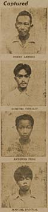

|
j
a v a s c r i p t |
July 25, 1943

"Laurel Attackers Confess." There's a picture of the four: Simon Santos, 42; Antonio Peña, 16; Manuel Pascal, 24; and Igmidio Petalio, 30. Leader Genaro Marcelino, 32, resisted and was shot, dying shortly after "confessing his crimes and expressing remorse." According to the article, the group were part of the 70-member "Marking Guerilla Band" organized by Marcos Villa Agustin. They "marked" their men and "got" them. Guerilla leader Hugh Straughn ordered Marcos to "get" Laurel, and Marcos assigned Marcelino to the job. While the four acted as lookouts, Marcelino fired seven shots, hitting Laurel thrice. During the investigation, a farmer said he saw seven men run and board a carretela that headed southwest. The Japanese found and raided their headquarters in Barrio Ususan on July 1, capturing 73 including the above 4. The barrio had natural defenses "comparable to that of a medieval castle" — tributaries of the Pasig bordered it on 3 sides and the gang kept flocks of noisy animals. The long, gory article sensationalized the exploits of the gang. . . . . "Government by Symbol" is the title of a long article by Laurel on Emperor Worship. The gist of it is about the Emperor's unifying force, which "may be termed a super-religion." Of this dynasty, he writes: "It will last forever." The article is too intellectual to be written by anyone other than Laurel himself. An article by S. Matsukawa shows his intellect falls far short of Laurel's. Puzzled by our lack of enthusiasm for independence, he writes that Japan understands "our reluctance to criticize the colonial status under the Americans as one of domination," but notes we have no qualms about criticizing the Spanish. The essence of his argument is that under the Spanish, the Filipinos produced such men as "Burgos, Gomez and Zamora in the field of religion, Del Pilar and Luna in the military, and Bonifacio and Rizal in the political," then adds that we have no such men today. So presto, Spain gave us something of worth, while the Americans gave us only "shallow materialism." He forgets Aguinaldo and Mabini, completely overlooks Quezon, and the real martyr, Roxas — whom he should know about first-hand — as great a hero as the others and still resisting after a year of captivity. (In fact, they say he's back in Fort Santiago!) Matsukawa overlooks the fact that oppression and tyranny builds martyrs; raises a sturdier race than freedom, liberty and lack of want or suffering does. And he overlooks Laurel, a product of American schools and a martyr to the cause Matsukawa espouses, is he not? I can tell him why we are reluctant in the face of his kind of independence. The Filipinos understand that independence offered by the United States was honest and sincere, whereas that offered by Japan is self-serving, built as it is on one condition after another. Filipinos are intellectually able to discern the insincerity, bluff and lies of Japanese propaganda. Furthermore, the Americans (and Spaniards) never slapped, kicked and cuffed us about like the Japanese did. The Americans treated us more as equals, despite calling us their "little brown brothers," never intended, incidentally, as mockery, and never resented as such. Finally, the Filipinos are certain that the Americans will be back, and we'll get our independence, one on which we can stand to meet the rest of the world, eyes unflinching, character unbesmirched. End of lecture. ...ooOoo... |
|
|
|
|